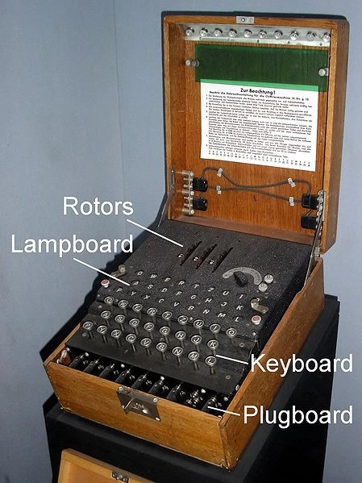
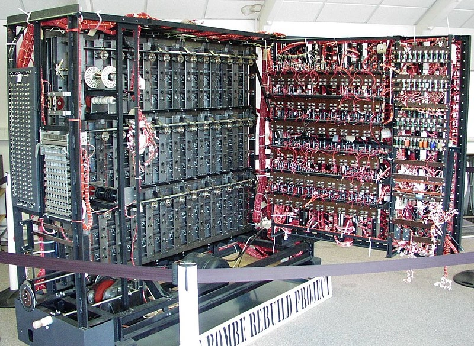

<style>
    code {
        padding: .2rem;
        background: lightgrey;
        border-radius: .25rem;
    }
</style>
<main>
    <header>
        <h1>Базова криптографія</h1>
    </header>

    <section>
        <header>
            <h2>Вступ</h2>
        </header>

        <p>Криптографія це наука про перетворення інформації. Її початок здебільшого відносять до часів Римської Імперії, коли воєначальники для передачі засекречених повідомлень використовували шифр Цезаря (~ 50 р. до н.е.). Звісно криптографія використовувалась і раніше, проте для нас це вже немає значення. Оскільки всі повідомлення на той час передавалися фізично за допомогою гінців, противник міг без проблем перехопити їх і викрасти повідомлення. Щоби унеможливити витік секретної інформації в руки противника всі подібні повідомлення писалися спеціальним чином. Брали латинську абетку і кожну букву початкового повідомлення заміняли на букву яка була на 3 позиції правіше в абетці. Тобто замість букви А писали букву D, замість B - E etc. Таким чином для людини яка не знала цього шифру в повідомленні побачила б купу незрозумілих літер. Проте для отримувача який знає про цей алгоритм дешифрування буде простим, необхідно лише замінити кожну букву отриманого повідомлення на букву яка знаходиться на 3 позиції лівіше в абетці. Цей шифр відноситься до моноалфітних шифрів простої заміни і надзвичайно легко піддається аналізу навіть без обчислювальної техніки.</p>

        <p>Наступним етапом розвитку зазвичай наводять <a href="https://ru.wikipedia.org/wiki/%D0%A8%D0%B8%D1%84%D1%80_%D0%92%D0%B8%D0%B6%D0%B5%D0%BD%D0%B5%D1%80%D0%B0" target="_blank">шифр Віженера</a> (1553 р.), який вже є складнішим по своїй суті і відноситься до поліалфавітних шифрів. Для шифрування та дешифрування вже необхідно було використовувати ключ. Ключем в криптографії називають спільний секрет який необхідний для операцій шифрування та дешифрування. Цей шифр вже не так просто взламати, проте за допомогою частотного аналізу це теж доволі легко можна зробити. Суть роботи кожного з алгоритмів пояснюватись не будуть оскільки вони ставатимуть все складнішими і для розуміння сучасних алгоритмів необхідно мати глибокі знання в математиці, а для розпису принципів роботи необхідно багато часу. В той же час знайти повний опис алгоритмів доволі легко.</p>

        <p>В подальшому криптографія розвивалася і вже в часи ІІ Світової Війни, німці побудували <a href="https://en.wikipedia.org/wiki/Enigma_machine" target="_blank">Енігму</a> (Рисунок 1). Це машина для шифрування, яку доволі довгий час неможливо було взламати. Завдяки цій машині ми можемо читати цей текст на своїх комп'ютерах. Оскільки для того аби взламати алгоритм Енігми було побудовано першу у світі електронну обчислювальну машину (ЕОМ) (хоча у цьому випадку це швидше була електрично-механічна машина, а не електронна) під назвою "Bombe" (Рисунок 2), інженером Аланом Т'юрінгом. Це можна вважати початком комп'ютерної ери.</p>

        <div style="display: flex; flex-direction: row;">
            <figure>
                
                <figcaption>Рисунок 1. Enigma</figcaption>
            </figure>
            <figure>
                
                <figcaption>Рисунок 2. Bombe</figcaption>
            </figure>
        </div>

        <p>Історія першої ЕОМ описана в однойменному фільмі "Енігма" 2001 року</p>
    </section>

    <section>
        <header>
            <h2>Сучасні алгоритми</h2>
        </header>

        <p>Сучасні алгоритми можна поділити на 2 групи - симетричні та асиметричні.</p>
        <p>Симетричні алгоритми припускають використання одного спільного секрету який попередньо відомий обом сторонам і ніяким чином не передається по відкритому каналу зв'язку. Цей спільний секрет (ключ) використовується як для шифрування так і для дешифрування повідомлення.</p>
        <p>Асиметричні алгоритми використовують 2 ключі - закритий та відкритий (або приватний та публічний). Дані алгоритми дозволяють передачу відкритого ключа по любим каналам зв'язку, цей ключ не є секретом. Публічний ключ використовується для шифрування повідомлень (а також для перевірки цифрового підпису (ЦП, DS, Digital Signature) в алгоритмах ЦП (DSA, Digital Signature Algorithm)), в той час закритий ключ використовується для розшифрування повідомлень (і для створення ЦП в DSA).</p>

        <p>По своїй суті асиметричні алгоритми куди менш надійніші ніж симетричні і в їх основі лежить складніша математика. Якщо для майже всіх симетричних алгоритмів в різних формах використовується властивість логічної операції "виключного або" (XOR), то для асиметричних використовуються різні математичні властивості певних структур. Для прикладу в основі алгоритму RSA лежить складність факторизації великий чисел, яку навіть сучасні обчислювальні кластери теоретично будуть проводити надзвичайно довго (довше ніж проживе наша планета), а в основі ECC лежать властивості еліптичних кривих всередині яких пускають промінь який відбивається від стінок кривої певну кількість раз і знайти початку точку доволі важко. Якщо ви не зрозуміли попереднє речення це нормально, щоб пояснити принципи ECC необхідна окрема велика стаття і значні початкові знання для читача, по цій причині розбиратись самі алгоритми не будуть, а буде оглянуто лише практичне їх застосування. Повертаючись до порівняння асиметричних та симетричних алгоритмів, можна впевнено сказати, що симетричні куди швидші так надійніші, проте в них є свої недоліки. А саме спільний секрет який необхідно попередньо передати по закритому каналу зв'язку, що не завжди можливо. І саме тут допомагають асиметричні алгоритми. Також останні дуже корисні в DSA, оскільки дозволяють легко перевірити цифровий підпис, будь кому хто має відкритий ключ, який без проблем можна видавати будь кому.</p>

        <p>Для порівняння розмір ключа, який зазвичай використовується, симетричних алгоритмів на сьогоднішній день становить 128-256 біт, в той час як для асиметричних це 1024-4096 біт. При відносно однаковій складності прямого перебору. Способи криптоаналізу і особливості алгоритмів як блокові алгоритми, сцеплення блоків etc це все теми для детального вивчення і розглядатись не будуть.</p>

        <p>Як вже було згадано вище з асиметричних алгоритмів частіше всього використовуються RSA та більш сучасний ECC. Ці алгоритми використовуються для алгоритмів обміну ключами DH (Deffi-Hellman) та ECDH (Elliptic Curve Deffi-Hellman); а також цифрових підписів. Фактичне шифрування повідомлень за допомогою асиметричних алгоритмів використовується рідко, хіба що при шифруванні електронних листів.</p>
    </section>

    <section>
        <header>
            <h2>DH / ECDH</h2>
        </header>

        <p>Раніше було згадано алгоритми обміну ключами Деффі-Хелманна. Це алгоритм названий в честь двух вчених, які його розробили. Який дозволяє використовуючи асиметричний алгоритм RSA в DH і ECC в ECDH отримати спільний секрет використовуючи відкритий канал зв'язку не передаючи його. Тобто відправивши декілька повідомлень по відкритому каналу зв'язку ми зможемо отримати певний спільний секрет, в той же час той хто буде повністю прослуховувати канал не зможе його отримати. Суть алгоритму швидко не пояснити, тому просто приймемо це за аксіому. Цей алгоритм широко використовується, особливо в протоколі HTTPS коли Ви підключаєтесь до сайту ваш комп'ютер та веб-сервер формують спільний секрет для кожної сесії використовуючи саме алгоритм DH. Завдяки чому Ваш трафік не може бути розшифрований тим хто прослуховує Вашу мережу (це звісно не відміняє аналіз метаданих та сигнатур повідомлень, тому спецслужби все рівно знають куди ви заходите, що дивитесь і з ким спілкуєтесь).</p>

        <p>Використовуючи алгоритми обмінну ключами (Key Exchange в анг. термінології) зазвичай формують спільний секрет який після використовують в симетричних алгоритмах, оскільки вони набагато швидші.</p>
    </section>

    <section>
        <header>
            <h2>DSA</h2>
        </header>

        <p>DSA або ж алгоритми цифрових підписів. Дозволяють використовуючи асиметричні алгоритми шифрування створити певний файл (цифровий підпис/сертифікат) за допомогою закритого (приватного) ключа який може бути перевірений за допомогою відкритого ключа. Суть роботи доволі проста, повідомлення хешується після чого цей хеш підписується закритим ключем на виході ми отримуємо ЦП. ЦП ми відправляємо разом з повідомленням. Отримувач перевіряє підпис за допомогою відкритого ключа, оскільки ніхто не зможе створити підпис без закритого ключа ми зможемо бути певні, що підпис створений володарем закритого ключа. При перевірці підпису ми по перше впевнюємось, що це дійсно відправлено володарем закритого ключа (цю перевірку забезпечує алгоритм DSA), а також отримуємо хеш повідомлення. Потім отримувач хешує отримане повідомлення і зрівнює з хешем з підпису. Якщо вони не сходяться значить хтось підмінив повідомлення.</p>

        <p>Вищеописаний алгоритм DSA розроблений NIST (The National Institute of Standards and Technology, USA). Ця військово-дослідницька організація яка належить уряду США здебільшого розробляє і встановлює всі алгоритми в сфері кібербезпеки. Внаслідок чого можна припустити, що вони володіють методами дешифрування і підпису алгоритмами без наявності ключа. А враховуючи загальну складність сучасних алгоритмів неможливо бути певним, що в них не закладено вразливостей. В ранні часи розвитку комп'ютерних технологій існувала група шифропанків (cypherpunk), інформація про них не надто розповсюджена. Саме вони висували подібні побоювання щодо алгоритмів NIST. Серед шифропанків були творець PGP, засновник WikiLeaks, творець BitTorrent, ведучий науковий працівник Intel, а також Сатоші Накамото. Звісно це не більше ніж теорія змови, тому можна сміло покладатися на сучасні алгоритми :)</p>

        <p>Серед асиметричних алгоритмів на основі еліптичних кривих, використовуються спеціальні криві які забезпечують найбільшу надійність. Звісно майже всі такі криві запропоновані NIST. Проте є декілька кривих які запропоновані незалежними математиками (можна вважати open source). Одна з найпопулярніших це крива x25519, робота з нею доволі швидка для алгоритмів, а також вона не покрита патернами. Її творець також сказав
        <blockquote>I no longer trust the constants. I believe the NSA has manipulated them through their relationships with industry.</blockquote>
        Говорячи про найпопулярнішу на той час криву P-256.
        </p>

        <p>Узагальнюючи алгоритми DSA, вони дозволяють підтвердити особу творця повідомлення, проте вони не шифрують саме повідомлення і воно відправляється у відкритому вигляді. Цей алгоритм часто можна зустріти при оформленні документів, також ці алгоритми лежать в основі криптовалют</p>
    </section>

    <section>
        <header>
            <h2>AES</h2>
        </header>

        <p>Серед симетричних алгоритмів найбільш розповсюдженим є AES, також розроблений NIST і використовується буквально всюди. Оскільки це симетричний алгоритм йому необхідно лише один ключ для шифрування та дешифрування. Саме він використовується для шифрування секретної інформації спецслужбами США (та багатьох інших країн).</p>
        <p>На противагу виключно в інформаційних цілях можна згадати алгоритми розроблені СРСР та РФ. А саме алгоритм Магма (СРСР, КГБ, 8 управління) та алгоритм Кузнечик (РФ, ФСБ)</p>
    </section>

    <section>
        <header>
            <h2>Генерація ключів</h2>
        </header>
        <p>Тепер коли ми коротко оглянули алгоритми, можна розглянути найчастіше їх використання при роботі комп'ютерного інженера. А саме створити ключі, щоб підключатися по SSH і давати доступи до репозиторіїв.</p>
        <p>В Linux щоб створити ключ достатньо виконати команду <code>ssh-keygen</code> в неї є багато параметрів, з яких нас може зацікавити <code>-t [algorithm]</code> яка дозволяє вказати для якого алгоритму варто згенерувати ключі, <code>-b [bits]</code> аби вказати бітність (розмір) ключа, а також <code>-f [path]</code> аби вказати шлях по якому має знаходить файл (за замовчуванням це <code>/home/[username]/.ssh/id_[algorithm]</code> та <code>/home/[username]/.ssh/id_[algorithm].pub</code>). При генерації асиметричних ключів на виході є два файли в одного з яких розширення <code>.pub</code>. Вміст саме цього файлу ми можемо передавати в сторонні сервіси (GitHub, GitLab, його також використовує команда <code>ssh-copy-id</code>)</p>
        <p>Таким чином ми можемо за допомогою <code>ssh-copy-id</code> скопіювати дані ключі на сервери і підключати до них не використовуючи пароль. Навіть більше того ми можемо скопіювати приватний ключ на інші наші пристрої чи ОС (якщо їх декілька на пристрої) і також підключати до серверів використовуючи єдиний ключ.</p>
        <p>При виконані команди <code>ssh-copy-id</code> значення публічного ключа буде записано в файл <code>/home/[username]/.ssh/authorized_keys</code>. Тому ми можемо це зробити і вручну, але командою простіше</p>
    </section>
</main>

<footer>
    <address>Автор <a href="https://github.com/AltairInglorious" rel="author" target="_blank">Адам</a>, Amadeus Technologies</address>
    <time pubdate datetime="2024-08-24">Редакція 24-08-2024</time>
</footer>